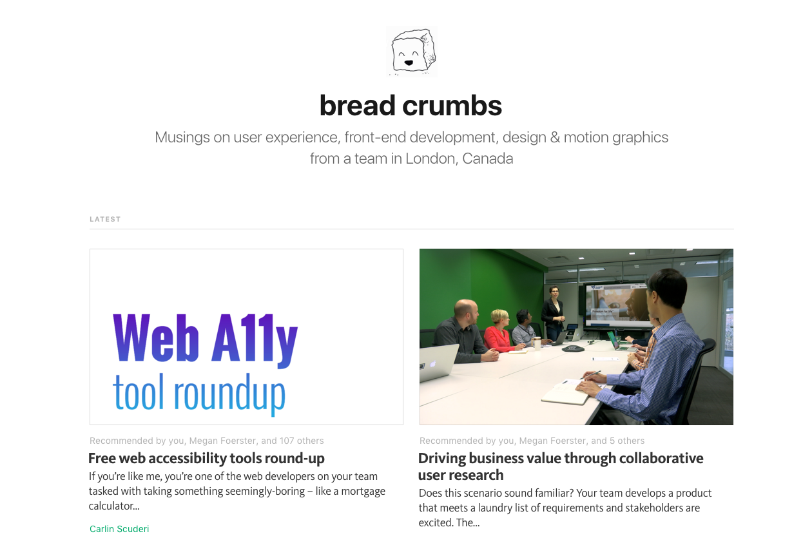

like require.js, browserify, etc
like grunt.js, gulp.js, etc
It's wonderful and scary. Let's get to know it!
😍 It is absolutely frigging awesome 🎉
$ webpack ./index.js bundle.js
-p//index.js
import shelob from './legendaryspiders/shelob';//shelob.js
require('../superweb');//superweb.js
require('jquery');{
test: /\.scss$/,
loader: 'style-loader' +
'!css-loader' +
'!autoprefixer-loader?browsers=last 2 version' +
'!sass-loader?includePaths[]=' + __dirname + '/app/styles&sourceMap=true';
}It's like a CMS for your front-end assets?
Look for slides at medium.com/bread-crumbs
